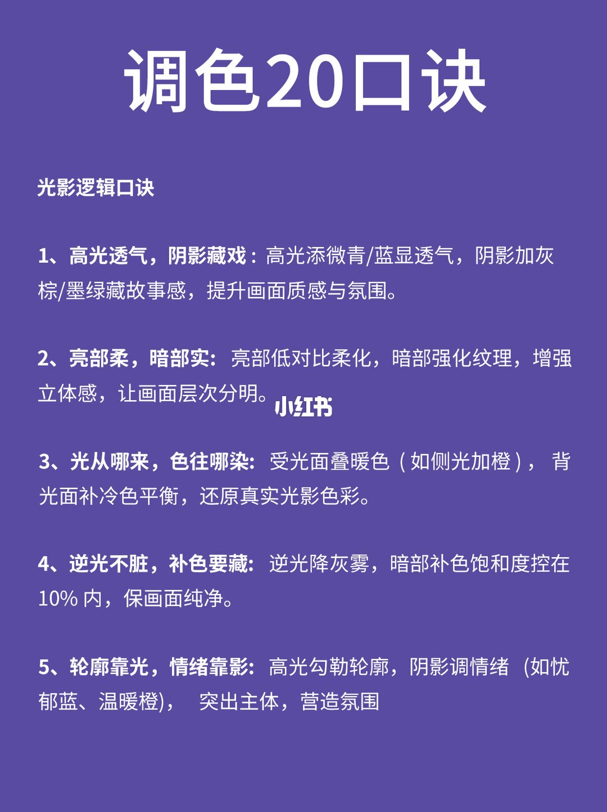
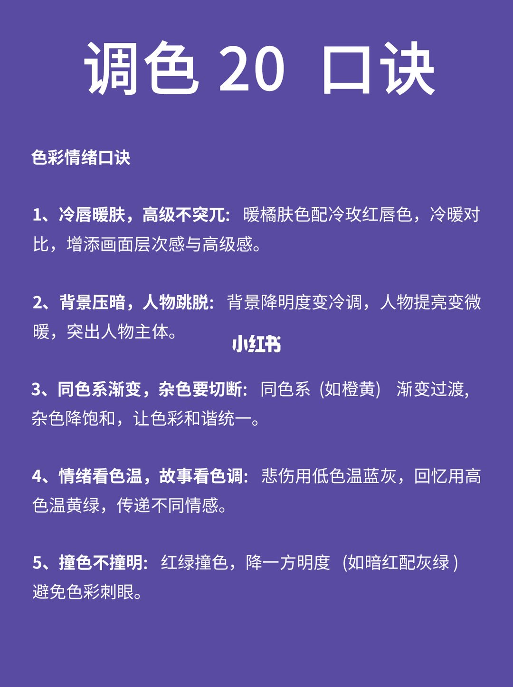
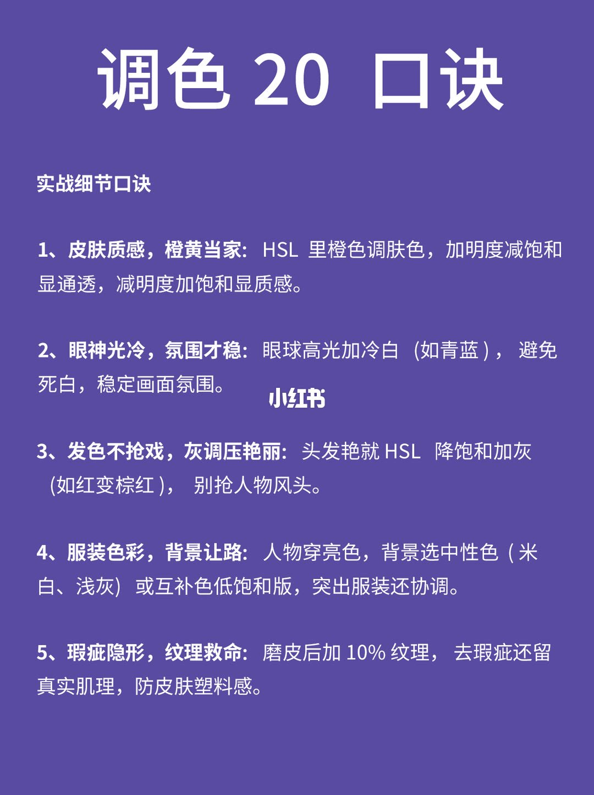
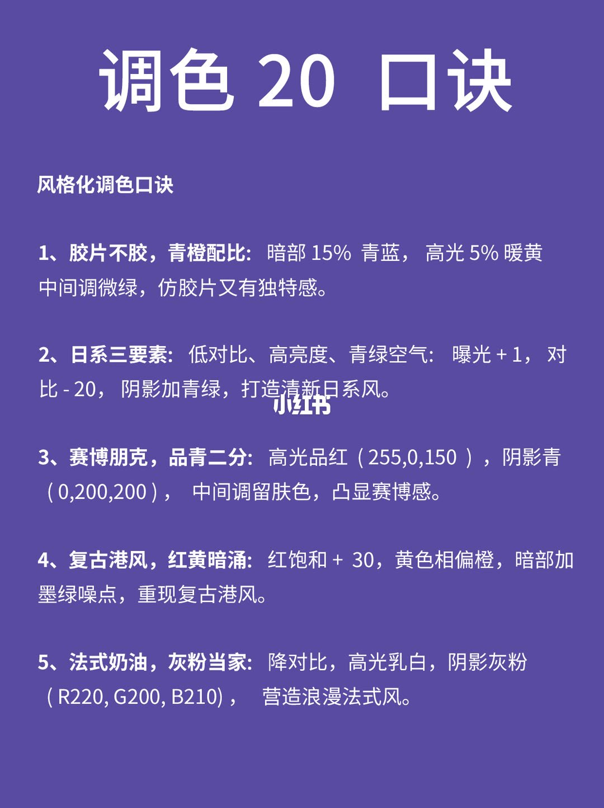
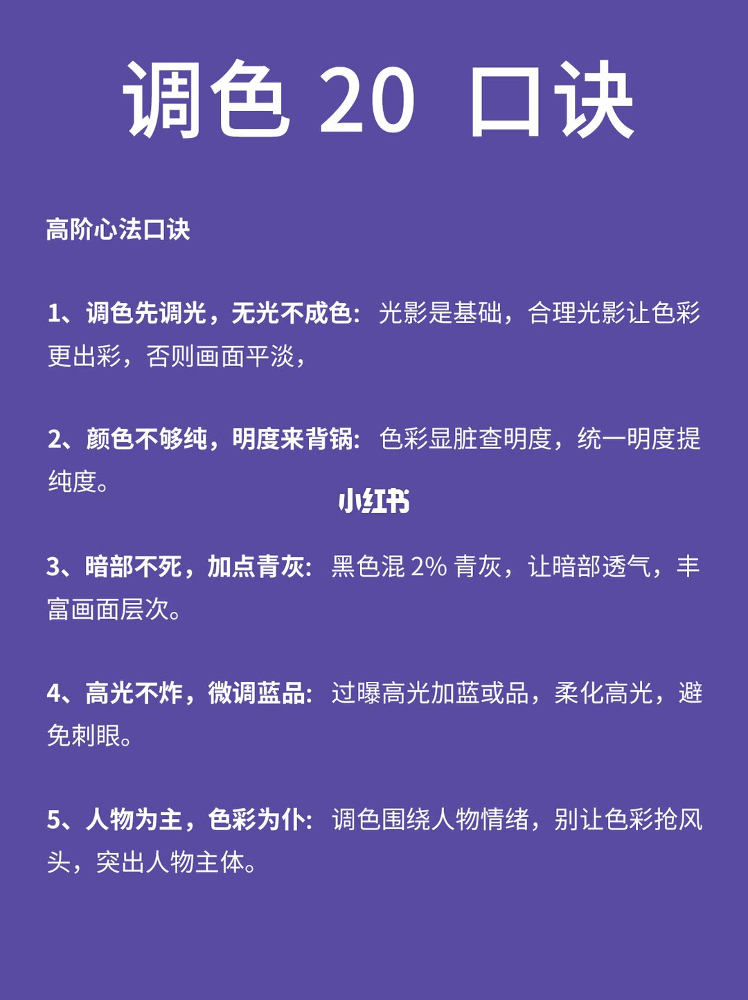

图文实录 · 小红书 · 小艾教修图
20个调色口诀｜懂原理才能修好图
标题说懂原理才能修好图，并写成 20 个口诀。图上前五页每页 5 条，一共 25 条编号口诀，第 6 页改成招生。前三页和第 5 页讲的是方向：高光往哪偏、人物和背景谁让谁。第 4 页改成百分比、曝光、对比和一组色值，但没有软件名，也没有单位。
1/6
光影逻辑口诀
紫底白字，顶上仍是「调色20口诀」。这一页 5 条都在讲光从哪来、亮部和暗部分工。
- 高光透气，阴影藏戏：高光添微青/蓝显透气，阴影加灰棕/墨绿藏故事感，提升画面质感与氛围。
- 亮部柔，暗部实：亮部低对比柔化，暗部强化纹理，增强立体感，让画面层次分明。
- 光从哪来，色往哪染：受光面叠暖色（如侧光加橙），背光面补冷色平衡，还原真实光影色彩。
- 逆光不脏，补色要藏：逆光降灰雾，暗部补色饱和度控在 10% 内，保画面纯净。
- 轮廓靠光，情绪靠影：高光勾勒轮廓，阴影调情绪（如忧郁蓝、温暖橙），突出主体，营造氛围。
第 4 条写了唯一的数字：暗部补色饱和度控在 10% 内。没有写这是哪个滑块、相对哪一档。第 5 条末尾图上没有句号。

2/6
色彩情绪口诀
仍是紫底白字。这一页把冷暖、明度、色温写成情绪规则，没有滑块数字。
- 冷唇暖肤，高级不突兀：暖橘肤色配冷玫红唇色，冷暖对比，增添画面层次感与高级感。
- 背景压暗，人物跳脱：背景降明度变冷调，人物提亮变微暖，突出人物主体。
- 同色系渐变，杂色要切断：同色系（如橙黄）渐变过渡，杂色降饱和，让色彩和谐统一。
- 情绪看色温，故事看色调：悲伤用低色温蓝灰，回忆用高色温黄绿，传递不同情感。
- 撞色不撞明：红绿撞色，降一方明度（如暗红配灰绿），避免色彩刺眼。
第 4 条把「低色温」配蓝灰、「高色温」配黄绿。两个例子都是颜色倾向，没有另举一个只属于「色调」的例子。

3/6
实战细节口诀
标题换成「实战细节口诀」。皮肤、眼神光、头发、衣服、磨皮各一条。皮肤和头发点名 HSL，其余没有点软件。
- 皮肤质感，橙黄当家：HSL 里橙色调肤色，加明度减饱和显通透，减明度加饱和显质感。
- 眼神光冷，氛围才稳：眼球高光加冷白（如青蓝），避免死白，稳定画面氛围。
- 发色不抢戏，灰调压艳丽：头发艳就 HSL 降饱和加灰（如红变棕红），别抢人物风头。
- 服装色彩，背景让路：人物穿亮色，背景选中性色（米白、浅灰）或互补色低饱和版，突出服装还协调。
- 瑕疵隐形，纹理救命：磨皮后加 10% 纹理，去瑕疵还留真实肌理，防皮肤塑料感。
皮肤这一条是一对方向：加明度、减饱和是通透；减明度、加饱和是质感。没有写加多少。纹理写了 10%，没有写纹理滑块的软件和刻度。

4/6
风格化调色口诀
这一页开始给数字。五条风格各自带配比，图上没有写这些数字属于哪一款软件。
- 胶片不胶，青橙配比：暗部 15% 青蓝，高光 5% 暖黄，中间调微绿，仿胶片又有独特感。
- 日系三要素：低对比、高亮度、青绿空气。曝光 +1，对比 -20，阴影加青绿，打造清新日系风。
- 赛博朋克，品青二分：高光品红（255,0,150），阴影青（0,200,200），中间调留肤色，凸显赛博感。
- 复古港风，红黄暗涌：红饱和 +30，黄色相偏橙，暗部加墨绿噪点，重现复古港风。
- 法式奶油，灰粉当家：降对比，高光乳白，阴影灰粉（R220, G200, B210），营造浪漫法式风。
曝光 +1 和对比 -20 没有单位。15%、5%、红饱和 +30 也没有写相对哪一档。两组色值按图上原样记下，没有换算。

5/6
高阶心法口诀
五条回到顺序和主次。第 1 条的句子在图上停在逗号。
- 调色先调光，无光不成色：光影是基础，合理光影让色彩更出彩，否则画面平淡，
- 颜色不够纯，明度来背锅：色彩显脏查明度，统一明度提纯度。
- 暗部不死，加点青灰：黑色混 2% 青灰，让暗部透气，丰富画面层次。
- 高光不炸，微调蓝品：过曝高光加蓝或品，柔化高光，避免刺眼。
- 人物为主，色彩为仆：调色围绕人物情绪，别让色彩抢风头，突出人物主体。
2% 写在「黑色混青灰」上，没有写混进哪个黑色滑块。第 1 条逗号后面图上没有后文。

6/6
招生页
白底。大字是「突然有个大胆想法」，中间是一张大哭的表情。正文是：挑战（30天内）至少教会 66 位小伙伴学修图，从零基础到精通修图。要求写成 49/月。下面三条：有台自己的电脑；每周有 3 小时学习时间；按时完成课后作业，虚心接受老师点评。这一页没有调色口诀。

收尾
结论
笔记把「修好图」收成口诀，但图上编号是 25 条，标题写的是 20 条。能反复用的是分工：先光后色，受光偏暖、背光偏冷，人物亮一点暖一点、背景暗一点冷一点，肤色在橙色里用明度和饱和对调。第 4 页的风格数字和第 6 页的 49/月不能当成同一套原理。
支撑页
- 先调光、高光和阴影各管一件事：第 1/6 页五条，第 5/6 页第 1、4 条。
- 人物压过背景和衣服：第 2/6 页第 2 条，第 3/6 页第 3、4 条，第 5/6 页第 5 条。
- 带数字的只有第 1/6 页的 10% 补色、第 3/6 页的 10% 纹理、第 4/6 页整页配比、第 5/6 页的 2% 青灰。
- 第 6/6 页只有招生：30 天、66 人、49/月、每周 3 小时。
边界
- 标题「20个」和前五页 25 条对不上。不能把缺的 5 条补进笔记里，也不能把第 6 页算成口诀。
- 第 2/6 页把低色温写成蓝灰、高色温写成黄绿。图上没有说明这是开尔文，还是作者自己的叫法。
- 第 4/6 页的 +1、-20、15%、5%、+30 和两组色值没有软件、没有单位。不能改写成某一款调色台的滑块读数。
- 第 5/6 页第 1 条停在「否则画面平淡，」。后面写什么，图上没有。
- 六页都没有修前修后对照。